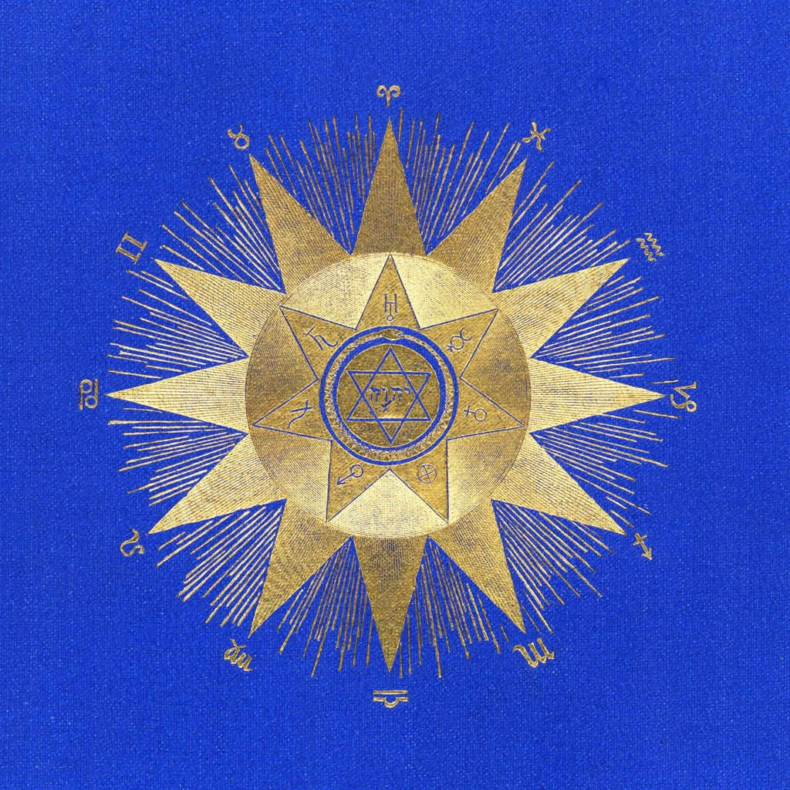

The Rising Sign (Ascendant) in Astrology
The Rising Sign, or Ascendant, represents your outer personality, your first impression, and how others perceive you. It's the mask you wear in the world and your automatic responses to new situations. It also indicates your physical appearance and general approach to life.
Rising in Aries
Keywords: Appears energetic, pioneering, direct, assertive, courageous, impulsive.
You appear energetic, pioneering, and direct. Others see you as assertive and courageous, often taking the lead. You project an independent and sometimes impulsive demeanor, always ready for action.
Rising in Taurus
Keywords: Appears calm, grounded, stable, dependable, sensual, persistent.
You appear calm, grounded, and stable. Others see you as dependable and sensual, with a love for comfort and beauty. You project a patient and sometimes stubborn demeanor, valuing security and consistency.
Rising in Gemini
Keywords: Appears communicative, curious, adaptable, witty, intellectual, restless.
You appear communicative, curious, and adaptable. Others see you as witty and versatile, always eager to learn and share information. You project an intelligent and sometimes restless demeanor, engaging with the world through conversation.
Rising in Cancer
Keywords: Appears nurturing, sensitive, protective, empathetic, home-loving, intuitive.
You appear nurturing, sensitive, and protective. Others see you as empathetic and home-loving, with a strong emotional connection. You project a gentle and intuitive demeanor, seeking comfort and security in your interactions.
Rising in Leo
Keywords: Appears confident, creative, charismatic, dramatic, proud, warm.
You appear confident, creative, and charismatic. Others see you as warm and a natural leader, enjoying the spotlight. You project a dramatic and expressive demeanor, seeking attention and admiration.
Rising in Virgo
Keywords: Appears practical, analytical, modest, helpful, detail-oriented, reserved.
You appear practical, analytical, and modest. Others see you as helpful and detail-oriented, often focusing on efficiency. You project a reserved and sometimes critical demeanor, striving for perfection in your presentation.
Rising in Libra
Keywords: Appears charming, diplomatic, balanced, fair, social, graceful.
You appear charming, diplomatic, and graceful. Others see you as balanced and relationship-oriented, always seeking harmony. You project a pleasant and agreeable demeanor, valuing fairness and cooperation in your interactions.
Rising in Scorpio
Keywords: Appears intense, mysterious, powerful, perceptive, determined, private.
You appear intense, mysterious, and powerful. Others see you as deep and transformative, with a magnetic presence. You project a determined and private demeanor, often revealing little about your true self initially.
Rising in Sagittarius
Keywords: Appears optimistic, adventurous, philosophical, free-spirited, enthusiastic, honest.
You appear optimistic, adventurous, and philosophical. Others see you as free-spirited and enthusiastic, always seeking new horizons. You project an honest and sometimes blunt demeanor, valuing freedom and exploration in your approach to life.
Rising in Capricorn
Keywords: Appears disciplined, responsible, serious, ambitious, capable, reserved.
You appear disciplined, responsible, and serious. Others see you as ambitious and capable, with a strong work ethic. You project a reserved and professional demeanor, focused on achieving your goals and maintaining control.
Rising in Aquarius
Keywords: Appears independent, original, intellectual, unconventional, humanitarian, objective.
You appear independent, original, and intellectual. Others see you as unique and humanitarian, often drawn to unconventional ideas. You project an objective and sometimes detached demeanor, valuing freedom and innovation in your interactions.
Rising in Pisces
Keywords: Appears compassionate, dreamy, sensitive, empathetic, artistic, impressionable.
You appear compassionate, dreamy, and sensitive. Others see you as empathetic and artistic, with a gentle nature. You project an impressionable and sometimes elusive demeanor, often absorbing the energies around you.